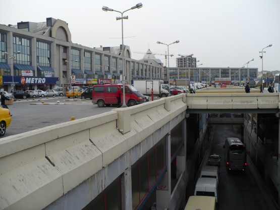
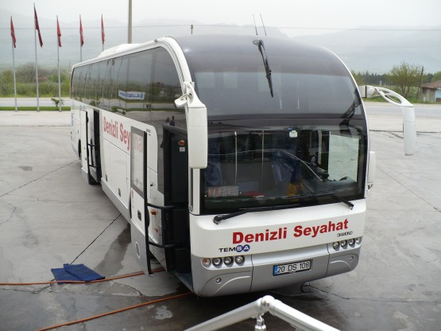
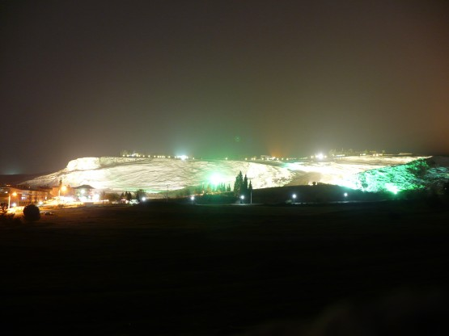

Писать красиво я не умею, к сожалению, поэтому ограничусь сухой информацией типа треков и километражей и отдельными яркими моментами, которые запомнились надолго. Эти лирические отступления помечу **
Первоначальная идея состояла в поездке по Израилю. Долго собирались, узнавали, что да как, отнимали время у уважаемых людей (за что им спасибо огромное) и в итоге поездка развалилась. Зато остался настрой - обязательно поехать этой весной туда, где солнце и тепло. Солнце и тепло, солнце и тепло - ну конечно это Турция.
Закинул объявление в эту ветку - нашелся соучастник (правда ехать вдвоем так и не получилось), купили билеты от СПб до Истамбула, которые стоили всего 8300 туда и обратно. От идеи ехать вокруг Мраморного моря отказался и ей на смену пришел другой маршрут.
13 апреля
Ранним утром, а точнее около 1 часа ночи самолет прилетел в Истамбул.
**
Собираю велосипед около вокзала. Рядом стоит вереница из желтых одинаковых такси. Таксисты явно заинтересованы и обсуждают меня между собой. Постепенно собирается группа человек в 5 и один самый шустрый начинает спрашивать у меня разрешения прокатиться. Я начинаю показывать на контактные педали, мол. . . и вот он уже на моем велосипеде неуверенно виляя объезжает своих коллег. Да. . тут пальца в рот не клади. Ну ладно - обошлось.
**
Отъехал от аэропорта километров 15 в поисках места для палатки - увы. Стою на перекрестке, подъезжает полиция. О доброжелательном (или просто нормальном) отношении полиции к туристам я уже читал, но такого не ожидал. Узнали как дела, чего тут делаю в 2 часа ночи. Говорю мне бы мол "лов прайс отель". Предлагают проехать за ними. Еду шустро так, километров 35 в час, благо не далеко. Останавливаемся около невзрачной парадной с надписью отель. Полицейский бежит на 2 этаж, долго беседует с владельцем отеля, возвращается с выражением разочарования на лице, говорит - нет мест.
Предлагает поискать отель вместе со мной. Отказываюсь, говорю, что поеду на автовокзал (аутогар). Полицейский предупреждает, что от этого места до автовокзала 45 километров и желает счастливого пути.
**
Ночной Истамбул. Жизнь кипит, особенно если сравнивать турецкий ночной город и, например, финский. Постоянно ловлю себя на мысли, что Турция очень похожа на Россию. Всяко больше чем Россия на Финляндию. Слой битого стекла на дороге, это как у нас. Дорожная разметка со всякими светящимися и бегущими огнями - это, пожалуй, даже круче чем у финнов. На улицах много людей, прямо как у нас, но нет пьяных.
**
Автовокзал поразил своими размерами и единственным платным и грязным туалетом.
Брожу в ожидании автобуса, билет до Денезли куплен, велосипед оставлен в автобусной конторе. Из всех лавочек зазывают купить все подряд, начинаю привыкать к этому. Вдруг понимаю, что меня зазывают проехать на метро! Да, да, стоит человек и машет мне, чтобы я заходил в метро!
1/4 часть автовокзала:

**
Посадка в автобус. Морально готов, что с меня начнут требовать денег за вел. Вместо этого стюард в белой рубашке берет мой велосипед и ставит его в огромный багажник автобуса, причем все мои попытки помочь он отвергает. Велосипед встает вертикально, не поворачивая руль и не снимая рюкзака! Впереди дорога в 700 км на автобусе (кстати, всего за $35)
**
Автобус. Сравнения явно не в пользу наших. Буквально за пару недель до этого меня угораздило поехать на автобусе до Светогорска. Почему наши водилы такие злые и почему турки такие доброжелательные? Может солнца не хватает. . . Стюард разносит кексы и чай, автобус останавливается не часто, но в самый раз, чтобы размять кости. Я первый раз в таком длительном автобусном переезде не устал, а отдохнул!
Турки при первой возможности моют свои автобусы:

**
Вечерний Денезли. Супчик с ведром булок за 3 лиры (60 рублей). 15 километров на велосипеде и ночевка на холме с видом на Памуккале.
C места стоянки открывался вид на Памуккале подсвеченное прожекторами:
